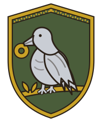

A grand-strategy board game for 2–5 players · Anno Domini 1400–1453
How to Win
IMPERIUM: Twilight of Empires is a turn-based grand-strategy board game for 2–5 players. The clock runs from 1400 to 1453 — sixteen rounds, each spanning three to four years of the century’s history — and when the last round ends, the walls of Constantinople either still stand, or they do not. Each player takes up a great power with a capital, an asymmetric economy, a war machine, and three secret ambitions. Expect a session of 60–120 minutes (≈ 4–8 minutes per player-round).
Prestige, the Currency of Glory
Prestige points are the sole victory currency. They are scored in the Cleanup phase — the fifth and final phase of every round (see Your Turn). Earn prestige from the deeds below; note well that treachery and lost capitals cost it.
Prestige Awards & Penalties (scored at Cleanup; secret objectives at game end)
Source
Prestige
Hold your own capital
+1 / round
Hold an enemy capital
+3 / round
Hold a named key city
+1 each / round
Trade monopoly (control both ends of a major route, or most ports of a sea)
+2 / round
Complete a Great Work
+5 … +10 once
Win a decisive battle (attacker or defender wipes/routs the enemy)
+1
Win a war (force peace, tribute, or vassalage)
+3
Take a walled city (T1+) by storm or siege
+2 (+3 if T4–T5)
Win a field battle outnumbered (enemy’s starting stack larger than yours)
+1 (stacks with the decisive-battle award)
Complete a secret objective
+4 each — hidden; revealed & scored only at game end
Royal-marriage bond, per round it holds
+2
Betray a treaty
−2 … −4
Lose your capital
−3
Every faction also holds a private deck of three secret objectives — hidden victory goals revealed and scored only at game end (round 16), unless the sudden-death rule below ends the game first. You need not complete all three; each one you do complete contributes its prestige.
Three Roads to Victory
1. The Prestige Threshold
The game ends at the Cleanup in which a player reaches the prestige threshold, scaled to player count. All prestige is scored at Cleanup, so Cleanup is the only point where victory is checked — a mid-round surge never ends the game early.
Prestige Threshold by Player Count
Players
Threshold
2
25
3
30
4–5
35
2. The 1453 Endgame
If no one has hit the threshold, the game ends after round 16’s Cleanup and the highest prestige wins. Tiebreak: most key cities, then most 🪙 gold.
3. Sudden Death — the Fall of Constantinople
If any power captures Constantinople and holds it through two full Cleanup phases (2 rounds), it wins immediately, regardless of prestige. This is the game’s dramatic spine: every faction’s clock is really counting down to whether the City stands.
Your Turn
Each round spans three to four years of the 1400 → 1453 story (16 rounds in all; the game displays a fixed round-to-year mapping), and every round runs the same five phases, in this order:
Omen — the table draws and resolves one event card from the current era’s Omen deck (see Event Cards & Eras).
Income & Upkeep — collect province yields, pay grain upkeep, resolve starvation.
Action Phases — in turn order, each player spends 4 actions.
Battle Resolution — resolve all declared battles, assaults, sieges, and naval clashes.
Cleanup — flip contested ownership, score prestige, check victory, re-sort turn order by prestige.
Phase 1 — Omen
At the start of each round, one card is drawn from the shared Omen deck and resolved, regardless of player count; with 4–5 players the next card is additionally revealed face-up as a telegraphed gathering omen. Cards come in three durations: Immediate (resolve now and discard), Persistent (stays in play for a number of rounds), and Grant (adds a tactic or political card to the drawer’s hand for later use). A faction-specific card with no valid target in the current game is treated as a neutral minor event — redraw, or apply the generic clause noted on the card. Full card rules live in Event Cards & Eras.
After the Omen resolves, each player draws 1 tactic card during the Income & Upkeep phase; a University grants +1 tactic-card draw per round, and the Great University Great Work grants +2 (see Tactic Cards). The Mercenary Bid Market is also resolved in this window, before the action phases: bidding proceeds in turn order — on your bid step, raise the current high bid (in whole gold, at least +1) or pass — and the winner immediately fields the company. See Actions for the full market.
Phase 2 — Income & Upkeep
Collect the summed yields of all your provinces into your treasury: province yields, plus building bonuses, plus trade-route income (an unbroken trade route pays 🪙 gold every Income phase). Tax posture is a free choice each Income phase:
Tax Postures
Posture
Gold
Effect
Lenient
×0.75
+1 unrest resistance
Normal
×1.0
—
Heavy
×1.5
Unrest: 1-in-6 province revolt check per over-taxed year
A revolting province flips to neutral and must be re-taken.
Then pay upkeep: every mobilized unit eats 🌾 grain. If you are short, convert stored grain first; for each 1 grain still owed, one unit deserts (is removed), lowest-value first (Levy → Archer → Infantry → Cavalry → Siege). Mercenary units desert first, and at double rate if unpaid.
Also settled now: tribute treaties (one power pays the other an agreed bundle of resources each Income phase), vassal tribute (a vassal’s province yields ×0.5 each Income phase), and any province struck by a spy’s Incite unrest yields nothing this phase. See Economy & Trade and Diplomacy & Vassals.
Phase 3 — Action Phases
The heart of your turn. In turn order, each player receives 4 actions per round (certain cards can raise this to 5). Spend them in any mix and any order from the list below — no action type is gated to a particular slice of the window; a Move that starts a battle queues it for the Battle phase.
Recruit — raise units, or hire mercenaries, in a valid province (your capital, a city, or a Barracks; navies need a Shipyard). One action recruits one province’s worth of purchases.
Move / Attack — move one army or one fleet along adjacency within its Move budget. Entering a defended province declares a battle; choosing Besiege or Assault against a walled city drives the siege lifecycle.
Trade — either convert resources at your market ratio, or establish/reassign a trade route with a fleet. One action per conversion or route change.
Build — construct a building, upgrade walls, or invest one round into a Great Work.
Diplomacy — propose, accept, or renounce a treaty; pay tribute; arrange a royal marriage. Proposing and accepting are each an action for the initiating player; the responder answers for free.
Play Card — play a held political or tactic card from your hand and pay its cost. Tactic cards are held for battles; political cards resolve immediately.
Spy — spend 1 action + 3 🪙 gold to dispatch an agent on one mission: peek at the top card of the Omen deck, secretly view one chosen rival’s secret objective, or incite unrest in an enemy province.
Full costs and procedures for all seven are in Actions.
Phase 4 — Battle Resolution
All fighting declared during the action phases resolves now: battles, assaults, sieges, and naval clashes. Entering a province held by a non-ally with units declares a battle, resolved in this phase. How they resolve is the business of Combat & Sieges.
Phase 5 — Cleanup
In order: flip contested ownership (entering an empty enemy or neutral province is an occupation — ownership flips at Cleanup unless contested); score prestige (see How to Win); check victory; discard down to the 4-card tactic hand limit (see Tactic Cards); and re-sort turn order. Turn order is re-sorted so the lowest-prestige power acts first next round (tiebreak: fewer provinces) — a deliberate catch-up lever that keeps a runaway leader in reach and the table tense to the final year.
Rounds, Years, and the Three Eras
The Omen deck is not one pile. It is split into three era decks, each shuffled separately, so the mood of the game darkens as 1453 approaches; at the start of each round the game draws from the deck matching the current era.
The Three Eras
Era
Rounds
Theme
Cards
Era I — Omens of Peace
1–5
Economy & minor politics; harvests, trade, dynastic games, early Ottoman troubles
Existential events; the Great Bombard, plague waves, the last crusade, the Fall
13
That is 46 event cards in all (16 / 17 / 13). When an era deck empties, reshuffle its discards; on entering the next era, retire the previous deck. The balance shifts by era: Era I skews toward blessings (8 Good / 5 Ill / 3 Mixed–Omen), Era II is dominated by calamity (3 Good / 12 Ill / 2 Mixed), and Era III evens out again (4 Good / 5 Ill / 4 Mixed–Omen) — the mood darkens sharply in the war years, and Era III’s calamities are far heavier than Era I’s. For a shorter evening, reduce to a 12-round “short 1440–1453” scenario for a ~60-minute game.
Actions
Four deeds a round. Each round of IMPERIUM spans three to four years of history, 1400–1453 across 16 rounds, and in each of them every player receives 4 actions (certain cards can raise this to 5). Actions are spent in turn order during your action window, and may be spent in any mix and any order from the list below — the window’s internal phases (Recruitment, Movement, Diplomacy) do not gate which action types may be played when. A Move that starts a battle queues it for the Battle phase; the fighting itself waits until every player has spent their round. The game checks every action for legality — turn, ownership, adjacency, resource cost, and action budget — and an illegal order is simply refused.
Cost: 1 action — one province’s worth of purchases (a batch), paid in full from the treasury.
Raise units, or hire mercenaries, in a valid province. You may raise units in any owned province that is a capital, a city, or has a recruitment building (a Barracks: 4 🪙 gold, 2 🪵 timber). Naval units require a Shipyard province (6 🪙, 4 🪵 — see Build).
Units — Raise Cost, Upkeep & Movement
Unit
Raise cost
Upkeep (🌾 grain)
Atk
Def
Move
Special
Levy
2 🪙 gold, 1 🌾 grain
1
1
1
1
Cheap; disbands cheaply; no map upkeep in home province
* A Siege unit contributes no offensive dice in a field battle, but adds its +3 vs walls in sieges.
Hiring mercenaries
Any land unit may instead be hired as a mercenary: pay ×1.5 gold, 0 grain to raise it, available immediately even outside recruitment buildings — but mercenaries carry ×2 grain upkeep and desert first, at double rate, if unpaid. Genoa hires mercenaries at the normal ×1.0 gold rate — the ×1.5 mercenary surcharge is waived. This applies to ordinary hiring only; Genoa’s bids at the Mercenary Bid Market are not discounted.
Faction touches on Recruit
Ottomans — levies cost −1 🌾 to sustain and can be raised in one turn in any owned province.
Hungary — Hungarian levies get +1 combat and cost −1 🪙.
Venice — war and merchant galleys cost −1 🪵 timber, and Venice may build up to 2 fleets per round at Venice (others build one).
Genoa — may sell Genoese Crossbowmen to any other faction or neutral for 🪙 gold.
Unique units are faction variants of the base roster above — each uses its base type’s raise cost, upkeep, and combat values unless its entry says otherwise — and some recruit only in named places: the Varangian Guard only in Constantinople; the Greek-Fire Dromon only at Constantinople or Thessalonica; Janissaries at Edirne or Bursa. The Great Bombard is the exception: it can never be recruited — it enters play only through the Era III omen The Great Bombard Forged (see Combat & Sieges). See The Factions.
Events can bar the gates: Ottoman Interregnum means the Ottoman may not recruit next round, and Fire of the Arsenal stops the targeted maritime power from building fleets for 1 round (see Event Cards & Eras).
Move / Attack
Cost: 1 action — one action moves one army or one fleet.
A unit moves up to its Move value in province move-cost along the adjacency graph. Plains, hills, forest, coast, and city provinces cost 1 to enter; mountains cost 2. Levies, infantry, archers, and siege units have Move 1; cavalry, galleys, and warships have Move 2. Ottoman Ghazi Akıncı ignore rough-terrain movement penalties.
Attack. Entering a province held by a non-ally with units declares a battle, queued for the Battle phase (see Combat & Sieges). Retreats are decided between battle rounds, not as an action.
Occupation. Entering an empty enemy or neutral province is an occupation: ownership flips at cleanup unless contested.
Stacking limit. A province may hold up to 8 land units per player (12 in a city or capital); a sea zone up to 6 naval units per player. Excess units cannot enter.
Straits & special crossings. A strait lets armies cross as if adjacent: the Bosphorus (Constantinople–Bithynia — holding Constantinople lets its owner deny the crossing to enemies) and the Strait of Messina (Naples–Sicily). Two further special crossings: the Golden Horn (Constantinople–Pera, adjacent city faces — a besieged Pera can be relieved only if its owner holds the Bosphorus), and the Dardanelles — the Sea of Marmara ↔ Aegean sea link, gated by Gallipoli: an enemy fleet plus a Gallipoli garrison can seal the Sea of Marmara.
Naval movement. Fleets move between adjacent sea zones (the 12 zones and their connections are in the chart below) and may enter or leave any bordering port province. Buda and Belgrade are river ports: they can build and berth fleets on the river but are not on any sea zone and cannot be reached by seagoing fleets.
Transport. A galley may carry one army stack across sea zones as a naval Move action, landing it in a friendly or contested coastal province (an amphibious assault: attacker −1). Galley transports carrying an army are destroyed with their cargo if the fleet is wiped out.
The Twelve Sea Zones — Adjacency & Ports
Sea zone
Connects to (zones)
Provinces touched
Bosphorus
Sea of Marmara, Black Sea West
Constantinople, Pera, Bithynia — the chokepoint: whoever holds Constantinople or a fleet here can toll/close the strait between Aegean and Black Sea
Sea of Marmara
Bosphorus; Aegean (via the Dardanelles at Gallipoli)
Constantinople, Selymbria, Gallipoli, Bithynia, Bursa — Gallipoli gates the Dardanelles; an enemy fleet + Gallipoli garrison can seal Marmara
Varna, Wallachia, Kaffa — entered only via the Bosphorus
Black Sea East
Black Sea West, Sea of Azov
Sinope, Trebizond, Kastamonu, Kaffa — freezes in Hard Winter
Sea of Azov
Black Sea East
Kaffa — dead-end zone; frozen in winter
Besiege. An attacker declares a siege by moving an army into (or adjacent to) a walled city and choosing Besiege. The besieging army is locked: it cannot move or take other Move actions while the siege holds, and a player may not besiege and field-fight elsewhere with the same stack.
Assault. The attacker may assault at any time as a Move/Attack action. While Wall HP is above 0, the defender keeps the full wall bonus and the attacker suffers an escalade penalty of −1; at Wall HP 0 (a breach), the assault is fought at normal field-battle odds with no wall bonus. Winning the assault captures the city.
Weather and heroes intervene: under Hard Winter, land movement is −1, sieges make no progress, and three Black Sea zones freeze; Hunyadi’s Long Campaign grants Hungarian land units one extra move/attack into a Balkan province that round.
Trade
Cost: 1 action per conversion or per route change.
Either convert resources at your market ratio, or establish or reassign a trade route with a fleet.
Market Ratios (give : get)
Your market
Ratio
No market (base)
3 : 1
Market building
2 : 1
Trade-ratio port (Venice/Genoa bonus, or Grand Bazaar)
2 : 1, and 1 : 1 for gold ↔ the port’s specialty
Conversions may turn resources to gold, or one resource into another. A trade route links two owned ports (coastal city or coast provinces) through a chain of sea-zone “hops”: establish it with a Trade action by assigning a fleet (a galley, acting as merchantman), and it pays gold every Income phase while it remains unbroken. Route income is 2 gold + port tier of each end + 1 per controlled sea-zone hop, where a port’s tier derives from the map’s HV flags (HV(4)+ port = 3, HV(3) port = 2, any other port = 1); a blockaded hop halves the route (round down), a severed hop pays nothing, and Venice or Genoa collect ×1.5 (round down). Full trade rules live in Economy & Trade.
Build
Cost: 1 action, plus the building’s listed cost.
Construct a building, upgrade walls, or invest one round into a Great Work. Build in an owned province. Ordinary buildings finish in one action; Great Works pay their cost up front, then take 1 Build action per round for the listed number of rounds — abandoning one forfeits the investment.
+1 faith/round; defenders in this province get +1 morale
Walls Lv1
5 🪙, 4 🪨
Wall tier T2: Wall HP 6, defender +2
Walls Lv2 (upgrade)
8 🪙, 6 🪨
Wall tier T3: Wall HP 10, defender +3
University
10 🪙, 4 🪨, 2 ✝️
+1 tactic-card draw per round; minor prestige
Great Works
Great Work
Cost
Rounds
Effect
Prestige
Hagia Sophia Repair
20 🪙, 10 🪨, 8 ✝️
3
+2 faith/round; unlocks unique Byzantine cards
+10
Theodosian Walls (Grand Walls)
15 🪙, 12 🪨
2
Wall tier T5: Wall HP 16, defender +4
+6
Great University
18 🪙, 8 🪨, 4 ✝️
3
+2 card draw/round; tactic reroll aura
+6
Grand Bazaar
16 🪙, 6 🪵, 6 🪨
2
Best trade ratio; +3 gold/route from this port
+5
Out of siege, Wall HP damage within a tier heals at +1 Wall HP per round, up to the tier’s maximum. A whole tier lost to a “wall tier −1” effect (such as Earthquake) is rebuilt with this action’s wall upgrade, paying its gold + 🪨 marble cost — see the tier table in Combat & Sieges.
Diplomacy
Cost: proposing and accepting are each an action for the initiating player; the responder answers for free.
Propose, accept, or renounce a treaty; pay tribute; arrange a royal marriage. The instruments of statecraft:
Treaties
Treaty
Terms
If broken
Alliance
Cannot attack each other; shared map vision; may co-besiege and escort
−4 prestige + reputation flag
Non-Aggression Pact
No attacks for a fixed term (default 3 rounds)
−2 prestige if broken early
Tribute
One power pays a resource bundle each Income phase
Missed tribute voids the pact; no penalty to the receiver
Royal Marriage
Alliance, plus +2 prestige/round to both
−4 prestige; the jilted power gains casus belli
Vassalize
Instead of fighting a minor state, buy its loyalty. Spend 1 Diplomacy action and pay the minor an up-front bribe of 8 gold + 4 × (garrison unit count); then roll 1d6 + your prestige-tier − garrison tier, where prestige-tier = ⌊your prestige ÷ 10⌋ (capped at 2) and garrison tier = ⌊garrison unit count ÷ 2⌋. On ≥ 4 the minor becomes your vassal. A standing NAP or royal-marriage-adjacent bribe (paying an extra +4 gold) grants +1 to the roll. On failure the bribe is half-refunded and you may retry next round. A vassal pays tribute of half its province yields each Income phase, grants +1 prestige per round, and once per 2 rounds you may call its levies: a free stack of 2 Levy (+1 per garrison tier) raised in the vassal’s capital. See Diplomacy & Vassals for the full rules.
Some courts play deeper games: Byzantium may spend ✝️ faith to sway Orthodox neutrals (Serbia, Trebizond, Wallachia, Epirus, Thessaly, Athens) toward neutrality or alliance instead of paying gold, and may bribe an attacker to stand down for gold; Genoa may take an instant loan and lend gold to other factions and neutrals; Hungary may declare a Crusade with papal support by spending faith. See each power’s entry in The Factions.
Play Card
Cost: 1 action, plus the card’s printed cost.
Play a held political or tactic card from your hand, paying its cost. Political cards resolve immediately; tactic cards are held for battles, where they work as printed — typically +1 die, a reroll, or a wall-bonus change. This action covers cards with no battle scope: a card scoped to a battle, assault, or siege is instead played during that engagement at no action cost (its printed resource cost is still paid), and Forced March rides free on one of your Move actions. Cards reach your hand through the round’s tactic-card draw (1 per player, +1 with a University, +2 more with the Great University) and through Grant cards from the Omen deck. The full card list and play rules live in Tactic Cards.
Spy
Cost: 1 action + 3 🪙 gold.
Dispatch an agent and choose one mission. Every mission first requires a success roll of 1d6 ≥ 3 (base 4-in-6). The target may lengthen the odds: a rival with a University imposes −1 (you then need ≥ 4), and Byzantium as the target resists with a +1 thanks to its intelligence tradition (you need ≥ 4, or ≥ 5 against a University rival).
Spy Missions
Mission
Effect
Read the Omens
Peek at the top card of the Omen deck (you learn it; you cannot change it)
Uncover an agenda
Secretly view one chosen rival’s secret objective card
Incite unrest
A target enemy province yields nothing next Income phase (the owner collects 0 from it)
On a failed roll the agent is captured: the mission fails, you lose 1 prestige (2 for the more aggressive Incite unrest), and the target is told an enemy spy was caught. Espionage is cheap information and light disruption — never a war-winner alone, but a wedge for the subtle player.
Combat & Sieges
War decides what coin and council cannot. A battle occurs whenever opposing stacks share a province (land) or a sea zone (naval). Battles are fought with modified dice and resolved in rounds: move into a province held by a non-ally's units and a battle is declared, queued for the Battle phase of the round. Move into an empty enemy or neutral province instead and it is an occupation — ownership flips at cleanup unless contested.
Mind the limits of the field: a province holds up to 8 land units per player (12 in a city or capital), and a sea zone up to 6 naval units per player — excess units cannot enter. Allies may co-besiege and escort one another. Neutral minors defend like players: attack and defeat the minor's garrison like any defender — several sit in defensible terrain or behind walls, so this is costly and may take a siege.
The Hit Rule
Each participating unit rolls 1d6 per combat round. It scores a hit if its roll meets or beats its hit threshold:
hit threshold = 7 − CV − modifiers, clamped to the 2–6 range.
So a unit of CV 1 hits on 6 (1 in 6), CV 2 on 5+ (2 in 6), CV 3 on 4+ (3 in 6). Each modifier — terrain, walls, tactic cards — lowers the threshold by its value, making the unit easier to hit with. Every hit removes one enemy unit; the losing owner removes lowest-value first by default (LEVY → ARCHER → INFANTRY → CAVALRY → SIEGE — configurable in the assault action). And rest easy about the dice: all randomness runs through a single seeded RNG on the authoritative server, so results are reproducible and cheat-proof.
Combat Values
Unit
CV attack
CV defence
In battle
Levy
1
1
Cheap, expendable
Infantry
2
3
Backbone; best defender-to-cost
Archer
2
1
Ranged: fires in the pre-round
Cavalry
3
2
Charge +1 attack on plains; pursuit on rout
Siege engine
0*
1
Weak in the field; +3 vs walls; bombards in sieges
Galley
2
2
Naval; transports 1 army; acts as merchantman
Warship
3
3
Naval; blockade and escort superiority
* A siege engine contributes no offensive dice in a field battle but adds its +3 vs walls in sieges. Mercenaries fight identically to regulars — only their cost, upkeep, and loyalty differ.
The Battle Round
Ranged step — only archers (and, in sieges, siege engines) roll. Their hits remove enemy units before melee: missiles strike first. Defenders behind walls ignore the first breach's worth of ranged fire (see Sieges).
Melee step — all remaining units on both sides roll simultaneously.
Apply casualties — both sides remove units equal to hits taken.
If both sides remain and neither retreats, repeat from step 1.
Combat Modifiers
Combat Modifiers
Situation
Modifier
Defender in hills / mountains / forest
defender +1
Attacker amphibious (from the sea)
attacker −1
Cavalry charge on plains
attacker's cavalry +1
Forest / mountains vs cavalry
cavalry bonus negated
City walls, while Wall HP > 0
defender +1 … +4 by wall tier (T1 +1 / T2 +2 / T3 +3 / T4–T5 +4)
Escalade (assaulting un-breached walls)
attacker −1
Tactic card
as printed (typically +1 die, a reroll, or a wall-bonus change)
Outnumbering 2:1 in a round
larger side +1
Tactic cards are held in hand for battles; political cards resolve immediately when drawn. The full tactic deck, and when a card costs an action to play, are set out in Tactic Cards below.
Retreat, Rout & Pursuit
Voluntary retreat — between rounds the attacker may retreat to the province they came from (if still friendly or empty); a defender may retreat to an adjacent friendly or empty province, ceding the contested tile.
Rout check — a side that lost ≥ 50% of its starting stack this battle rolls 1d6; it routs on a roll of 3 or less. Routing units retreat to an adjacent friendly or empty province; if none exists they surrender and are removed.
Morale modifiers — effects phrased as ±1 morale (event cards, a Church or Mosque) apply to this rout check: each +1 morale adds 1 to the side's rout-check die (routing less likely), each −1 subtracts 1, for any side containing affected units.
Pursuit — if a side routs and the enemy has cavalry, each cavalry inflicts 1 automatic pursuit hit on the fleeing stack.
Glory follows the sword: win a decisive battle (wipe out or rout the enemy, as attacker or defender) for +1 prestige; win a field battle outnumbered (the enemy's starting stack larger than yours) for +1 more, stacking with the decisive-battle award; take a walled city (T1+) by storm or siege for +2 (+3 if T4–T5); win a war — forcing peace, tribute, or vassalage — for +3. Lose your capital and pay −3. A casus belli lets the claimant attack without the usual prestige cost and scores +1 extra prestige for wins in that war (see Diplomacy & Vassals).
Naval Battles
Sea battles use the identical hit rules with naval CVs in a sea zone. There is no terrain; there are no walls. The winner controls the zone and may pursue into an adjacent zone. Galley transports carrying an army are destroyed with their cargo if the fleet is wiped out.
A zone controlled by an enemy fleet is blockaded: an enemy war fleet on your trade route halves that route's income (round down) — or, with escort superiority, severs it to zero — until cleared by a naval battle, and ports on the zone cannot be reinforced by sea. Beware piracy too: some Omen cards and neutral corsairs raid unescorted merchant fleets — the fleet loses that round's route income and, on a failed 1d6 ≤ 2 check, the merchant galley is sunk. A war fleet in the same zone escorts and prevents this.
A galley may carry one army stack across sea zones as a naval Move action, landing it in a friendly or contested coastal province. Landing against opposition is an amphibious assault: the attacker fights at −1.
Sieges
Taking a walled city is a multi-turn operation, not a single battle. Walls are graded in tiersT1–T5 — the campaign map lists every walled city’s tier, from T1 (a light wall) to T5 (the Theodosian Walls themselves); open provinces have no wall at all. Each tier maps to a Wall HP pool and a defender bonus. While a city’s Wall HP is above 0, the defender enjoys the wall bonus; at 0 HP the wall is breached.
Wall Tiers — HP & Defender Bonus
Wall tier
Wall HP
Defender bonus
Notes
— (palisade / none)
0
—
Open province
T1 (light wall)
3
+1
—
T2
6
+2
Buildable: Walls Lv1 (5 🪙 gold, 4 🪨 marble)
T3
10
+3
Buildable: Walls Lv2 upgrade (8 🪙, 6 🪨)
T4 (great fortress)
13
+4
e.g. Belgrade, Rome
T5 — Theodosian Walls
16
+4
Constantinople great work (15 🪙, 12 🪨 — 2 rounds; +6 prestige)
Card and event effects phrased as “wall tier ±1” move the city one row on this table, and its Wall HP is set to the new tier’s maximum. A tier lost this way is rebuilt with the Build action’s wall upgrade (gold + 🪨 marble — see Build); HP damage within a tier heals at +1 HP per round out of siege. Effects phrased as a ±25% / ±50% modifier to sieges or diplomacy translate to dice: every 25% is 1 pip on the relevant rolls (wall-damage, assault, or diplomacy/vassalize rolls) — so “capture at −50% siege cost” means +2 to the attacker’s wall-damage and assault rolls, and “−25% to its sieges” means −1 to its rolls.
The Siege, Stage by Stage
Circumvallation. Declare a siege by moving an army into (or adjacent to) the city and choosing Besiege. The besieging army is locked: it cannot move or take other Move actions while the siege holds. You may not besiege and field-fight elsewhere with the same stack.
Bombardment. Each round the siege persists, every siege engine rolls 1d6 of wall damage: 1–2 → 1 HP, 3–4 → 2 HP, 5–6 → 3 HP. Wall HP cannot go below 0; at 0 HP the wall is breached.
Starvation. A besieged city holds out for a number of rounds equal to its grain stores — default 3, +2 with a Granary. Each round of siege depletes 1 store; once stores hit 0, the garrison loses 1 unit per round to hunger, weakest first. A besieged coastal city depletes stores only while under full naval blockade — see Sea Resupply below.
Assault. The attacker may assault at any time (a Move/Attack action). If Wall HP > 0, the defender keeps the full wall bonus and the attacker suffers escalade −1. If Wall HP = 0 (breach), fight at normal field-battle odds with no wall bonus. Combat then resolves as a normal battle — in the ranged step, siege engines roll alongside archers, bringing their +3 vs walls. Winning the assault captures the city.
Relief. A friendly or allied army may march to relieve: it attacks the besiegers in a field battle. If the besiegers lose or retreat, the siege is broken and the walls begin to slowly repair — +1 HP per round out of siege, up to their maximum.
Sea Resupply
A land army alone can never starve out a port. A besieged coastal city depletes its grain stores only while under naval blockade. In any round where at least one sea zone adjacent to the city is not controlled by an enemy war fleet (an enemy galley or warship present and uncontested by a friendly war fleet), supply ships slip in: no store is depleted and hunger losses never begin — though bombardment and assault proceed normally. Only when every adjacent sea zone is enemy-controlled does a port starve like an inland city.
Constantinople & the T5 Masonry
Constantinople begins with the Theodosian Walls — tier T5: 16 Wall HP, defender +4 — the only such walls on the map. Under Byzantine hands the city auto-repels the first two siege rounds each time it is besieged (the defenders sally; no bombardment damage those rounds). Byzantium may spend a great work to keep the walls in repair; a lapsed empire lets them crumble to T3.
T5 masonry. Against an intact tier-T5 wall an ordinary siege train is nearly futile: the attacker's combined siege bombardment inflicts a maximum of 1 Wall HP per round — in total, regardless of how many siege units roll or what they roll. At that rate the Theodosian circuit (16 HP) absorbs sixteen rounds of battery — the entire game. Intact Theodosian Walls are therefore effectively unbreachable until the Great Bombard is forged, which is the design intent.
The Great Bombard
The Great Bombard — Orban's monster gun — is a unique siege engine: one exists per game, and only if the Era III omen The Great Bombard Forged is drawn. When that card resolves, the Bombard enters play at no cost in the recipient's capital (or any owned city): the Ottoman player receives it if in play; otherwise the card auctions it (gold + 🪨 marble bids) to the highest bidder. It cannot be recruited, rebuilt, or duplicated.
The Great Bombard
Attribute
Rule
Entry
Free, via The Great Bombard Forged only (Era III); one per game
Upkeep
3 🌾 grain/round. If unpaid it never deserts — it falls silent instead (no bombardment next round)
Movement
1 province per round, consuming a full Move action, regardless of terrain move cost; it may not enter mountains; it cannot benefit from extra-movement effects (e.g. Forced March)
Naval transport
Never by ordinary transport. A fleet containing at least one galley may spend its entire Move action carrying the Bombard alone (no army cargo) exactly one sea zone; if that fleet is destroyed at sea the Bombard sinks (removed from the game)
Field battle
Rolls no dice (as a siege engine)
Assault
Adds the standard siege-engine +3 vs walls
Bombardment
Rolls two wall-damage dice per siege round — up to 6 Wall HP/round. It ignores the T5 masonry cap, and while it is emplaced against a wall the cap is lifted for the entire besieging train
Capture
If the stack escorting it is destroyed, routs, or surrenders — or the city it garrisons falls — the Bombard is never destroyed by battle: it transfers intact to the victor as loot. The captor may instead spike it (remove it from the game) at the moment of capture
The prize is the game itself: capture Constantinople and hold it through two full cleanup phases (2 rounds) and you win immediately, regardless of prestige (see How to Win). Several factions also field unique warriors and combat powers — see The Factions — and Omen cards can tilt battles and sieges alike (see Event Cards & Eras).
Tactic Cards
Tactic cards are the card layer of combat — held surprises that bend a battle without replacing the dice. The shared tactic deck holds 47 cards over 23 designs (8 Common ×3, 8 Uncommon ×2, 7 Rare ×1), shuffled with the seeded RNG.
Drawing & holding. Each player draws 1 tactic card during the Income & Upkeep phase, after the Omen resolves. A University adds +1 draw per round; the Great University adds +2. Omen Grant cards add specific cards on top of these draws. The hand limit is 4 tactic cards — discard down to 4 at Cleanup; hands are hidden. When the draw pile empties, reshuffle the discard pile; cards that read remove from game never return.
Playing. A card scoped to a battle, assault, or siege is played during that engagement in the Battle phase at no action cost; any printed resource cost is still paid. Each side may play at most one tactic card per battle round; The Intercepted Letter is a reaction and exempt from this limit. A card with no battle scope is played with the Play Card action — except Forced March, which is played as a free rider on one of your Move actions.
“+N dice” — extra dice granted by a card are rolled in your melee step, at the hit threshold of one participating unit of your choice (chosen when the card is played). They obey the normal 2–6 clamp.
Rerolls — no die may be rerolled more than once. The Great University's tactic reroll aura: once per battle, its owner may reroll one of their dice as if by a tactic card (the once-per-die rule still applies).
The 23 Ratified Tactic Cards
Card
Tier (copies)
Effect
Forced March
Common ×3
Rider on one of your Move actions: that army moves +1 province; it may not Besiege or Assault this round.
Veterans of the Border
Common ×3
One land battle: your side rolls +1 die in each melee step.
The Pilot of the Narrows
Common ×3
One fleet battle: your side rolls +1 die in each melee step.
Ladders and Fascines
Common ×3
In one round of a siege assault, reroll one of your dice.
A Good Season at the Counting-House
Common ×3
Gain 2 🪙 gold.
Grain Barges of the Danube
Common ×3
Gain 2 🌾 grain.
Ears in the Bazaar
Common ×3
Look at all tactic cards held by one rival.
Locked Shields
Common ×3
One land battle in which you defend: reroll your lowest die in each melee step.
Feigned Retreat
Uncommon ×2
At the start of any battle round, before dice: withdraw your whole stack to an adjacent friendly or empty province. The battle ends; no pursuit.
Night Sortie
Uncommon ×2
One round of a siege against your city: the garrison suffers no store depletion or hunger loss; instead the besieger loses 1 unit (weakest first).
The Bribed Gatekeeper
Uncommon ×2
One assault you launch this round: the defender's wall bonus is 0 (Wall HP unchanged; escalade −1 still applies).
The Chain Across the Horn
Uncommon ×2
One coastal province you hold cannot be the target of an amphibious assault until the start of your next turn.
Condottieri Contract
Uncommon ×2
Pay 2 🪙: one land battle — your side rolls +2 dice in each melee step.
Papal Indulgence
Uncommon ×2
Pay 2 🪙: gain 3 ✝️ faith (the sole sanctioned gold→faith conversion — markets never trade faith).
The Intercepted Letter
Uncommon ×2
Reaction — play as a rival plays a tactic card: cancel it. Both cards are discarded.
The Hexamilion Manned
Uncommon ×2
One land battle you defend in an unwalled province: gain defender +2 (a temporary T2-grade wall bonus; creates no Wall HP; does not stack with real walls).
Greek Fire
Rare ×1
Before dice in a fleet battle you are fighting: win it outright — all enemy naval units in the zone are destroyed (transports and cargo with them). Then discard one other tactic card from your hand and remove this card from the game.
Treason at the Gate
Rare ×1
Pay 4 🪙. Play on a walled city you have besieged for 2+ consecutive rounds: the city falls without an assault — its garrison surrenders (removed) and you occupy it, walls at their current HP. Remove this card from the game.
The Pay Chest Taken
Rare ×1
Take up to 3 🪙 from one rival's treasury (never more than they hold).
Holy War Proclaimed
Rare ×1
Pay 2 ✝️: until the start of your next turn, your side rolls +1 die in each melee step of every battle you fight.
Sails from the West
Rare ×1
Play while a coastal city you hold is besieged: this round its stores do not deplete and it takes no hunger loss — even under full naval blockade — and restore 2 depleted grain stores (up to its maximum).
A Death in the Palace
Rare ×1
Name one rival: a truce binds you both until the start of your next turn — neither may declare a new battle, assault, or siege against the other (engagements already joined continue).
The White Knight's Stroke
Rare ×1
In one round of a land battle, reroll any of your dice once (keep the second results).
Tactic Deck Distribution
Tier
Designs
Copies each
Cards
Common
8
3
24
Uncommon
8
2
16
Rare
7
1
7
Tactic deck
23
—
47
Economy & Trade
Empires are not fed by glory. Five resources drive everything in IMPERIUM: 🪙 gold and 🌾 grain are the core economy; 🪵 timber, 🪨 marble, and ✝️ faith build things. Your provinces are resource tiles you tax each year — hold them, keep them fed, and let the sea routes carry gold home to your treasury.
The Five Resources
The Five Resources
Resource
Tier
Primary use
🪙 Gold
Core
Recruit units, build, bribe, buy in markets, pay tribute
🌾 Grain
Core
Sustain armies (upkeep); starvation if short
🪵 Timber
Secondary
Ships, shipyards, granaries, siege engines
🪨 Marble
Secondary
Walls, universities, great works
✝️ Faith
Secondary
Churches, great works, some cards; feeds prestige
Gold also raises and pays all units — especially mercenaries, Janissaries, and knights — and funds buildings, bribes, and loans. Grain sustains armies each round and its lack is deadly. Timber builds war galleys, merchant galleys, siege engines, and wall repairs. Marble raises and repairs wall tiers, builds fortresses and great works, and arms stone-throwing siege engines. Faith earns church income, sways Orthodox and Catholic neutrals, calls crusades, turns indulgences into gold, and feeds prestige.
Faith is a non-tradeable prestige and religion resource — see Markets & Conversion. Prestige itself is not a resource; it is your victory track (see How to Win).
Where Resources Come From
Each province is a tile with a terrain type and a per-turn yield, an owner (or neutral), and a coastal flag. Base yield is the province's default; named key cities and buildings modify it — check the map's province registry for each province's listed yields.
Terrain Base Yields
Terrain
Base yield
Plains
🌾 grain 2, 🪙 gold 1
Hills
🪨 marble 1, 🪙 gold 1
Mountains
🪨 marble 2
Forest
🪵 timber 2, 🌾 grain 1
Coast
🌾 grain 1, 🪙 gold 1; enables ports and trade
City
🪙 gold 3, ✝️ faith 1
Six terrain types cover the whole board — plains, hills, mountains, forest, coast, and city. There is no desert terrain: the map’s southern edge is carried by coast (Tunis) and city (Cairo) tiles.
A handful of named key cities — exactly the provinces the map flags HV(n): Constantinople HV(5); Venice, Genoa, Rome HV(4); Thessalonica, Athens, Trebizond, Crete, Cairo, Alexandria, Naples, Kaffa HV(3) — carry extra yields, prestige value, and pre-built walls. Beyond province yields, income also flows from building bonuses (see Buildings), trade-route gold (see Trade Routes), vassal and treaty tribute (see Vassal & Treaty Income), and faction powers — Byzantium's Hagia Sophia, for one, yields +2 ✝️ faith/round at Constantinople on top of its listed yield.
The Income & Upkeep Phase
Income & upkeep is phase 2 of each round — and each round spans three to four years of the 1400-to-1453 story, 16 rounds in all. Collect province yields, pay grain upkeep, then resolve starvation if you are short.
Income
Every player collects the summed yields of all owned provinces into their treasury. Your income each round is:
One exception: if an enemy spy has succeeded at an Incite Unrest mission against one of your provinces, that province yields nothing next Income phase — you collect 0 from it.
Taxation
Set a tax posture on your realm — a free choice each Income phase.
Tax Postures
Posture
Gold modifier
Risk
Lenient
×0.75
+1 unrest resistance
Normal
×1.0
—
Heavy
×1.5
Unrest: 1-in-6 province revolt check per over-taxed year
A revolting province flips to neutral and must be re-taken.
Upkeep
Every mobilized unit eats 🌾 grain each Income phase. Upkeep is paid automatically from the treasury after income is collected. The grain due is simply the sum of upkeep over all of your armies and fleets.
Grain Upkeep per Unit (per round)
Unit
Grain
Note
Levy
1
No map upkeep in home province
Infantry
1
—
Archer
1
—
Cavalry
2
—
Siege
1
—
Galley
1
—
Warship
1
—
Mercenaries are the exception: hired at ×1.5 gold and 0 grain to raise, they carry ×2 grain upkeep and desert first if unpaid. Companies won at the Mercenary Bid Market also enter as mercenary units (×2 grain upkeep, desert-first) — see Actions for the market itself, a deliberate gold sink.
Starvation
If your treasury grain covers the grain due, pay it — done. If you are short, resolve starvation:
Convert any stored grain first.
For each 1 grain still owed, one unit deserts (is removed), lowest-value first (Levy → Archer → Infantry → Cavalry → Siege); each unit removed offsets its own upkeep.
Mercenary units desert first and at double rate if unpaid.
Starvation makes over-extension self-correcting and gives grain-rich terrain strategic weight. A besieged city's food is a separate matter — it holds out for its grain-store rounds (default 3, +2 with a Granary); see Combat & Sieges.
Markets & Conversion
Any player may convert resources to gold, or between resources, at a market ratio. The ratio improves with infrastructure. Conversion is a Trade action (see Actions) — one action per conversion.
Market Ratios (give : get)
Where
Ratio
No market (base)
3 : 1
Market building
2 : 1
Trade-ratio port (Venice/Genoa bonus, or Grand Bazaar)
2 : 1, and 1 : 1 for gold↔the port's specialty
✝️ Faith cannot be converted at markets — it is non-tradeable. Only specific card and faction effects turn faith into gold: Papal Indulgence lets you convert up to 3 ✝️ → 3 🪙 in a round, and Hungary may convert indulgences → gold. Events can also sweeten conversions — under a Bumper Harvest, each 🌾 converted to 🪙 yields +1 (see Event Cards & Eras).
Trade Routes & Sea Trade
Sea zones are the arteries of wealth. Fleets travel them; trade routes run gold along them.
A trade route links two owned ports through a chain of sea zones ("hops"). Establish a route with a Trade action by assigning a fleet — a Galley, acting as merchantman — to it; the route then pays gold every Income phase while it remains unbroken. Reassigning a route is likewise one Trade action per route change. A Galley costs 🪙 5, 🪵 2, can transport 1 army, and doubles as merchantman; a Warship (🪙 8, 🪵 3) provides blockade and escort superiority.
Route income
Each unbroken route pays, per Income phase:
2 gold base, plus
each port's tier, derived from the map's HV flags — an HV(4)+ port counts 3, an HV(3) port 2, any other port 1 — plus
+1 per sea zone on the route that you or an ally control.
Then apply, in order:
if any hop is blockaded by an enemy war fleet: route income ×0.5 (round down);
if any hop is severed (enemy fleet and no friendly escort): route income = 0;
if your faction is Venice or Genoa: route income ×1.5 (merchant bonus, round down).
Blockade, piracy, and escort
Blockade. An enemy war fleet (Galley or Warship) occupying a sea zone on your route halves — or, with escort superiority, severs — that route until cleared by a naval battle (see Combat & Sieges). The winner of a naval battle controls the zone, enabling blockade.
Piracy. Some Omen cards and neutral corsairs raid unescorted merchant fleets: the fleet loses that round's route income and, on a failed 1d6 ≤ 2 check, the merchant galley is sunk. A war fleet in the same zone escorts and prevents this.
River ports. Buda and Belgrade are river ports on the Danube: they can build and berth fleets on the river but are not on any sea zone and cannot be reached by seagoing fleets.
Merchants earn glory too: a trade monopoly — control both ends of a major route, or most ports of a sea — is worth +2 prestige per round (see How to Win).
Buildings
Construct buildings with a Build action in an owned province; ordinary buildings finish in one action.
+1 faith/round; defenders in this province get +1 morale
Walls Lv1
🪙 5, 🪨 4
Wall tier T2: Wall HP 6, defender +2
Walls Lv2 (upgrade)
🪙 8, 🪨 6
Wall tier T3: Wall HP 10, defender +3
University
🪙 10, 🪨 4, ✝️ 2
+1 tactic-card draw per round; minor prestige
Buildings gate recruitment: raising land units requires an owned province that is a capital, a City, or has a Barracks — and naval units require a Shipyard province. Certain cards can raise your actions per round from the base 4 to 5; a University instead grants +1 tactic-card draw per round. See Actions and Tactic Cards.
Great Works
Great Works are large, prestige-bearing projects that take multiple rounds to complete. Pay the cost up front, then invest 1 Build action per round for the listed duration; abandoning forfeits the investment. They are the primary engine of prestige for a builder-focused player — Byzantium repairing the Great Church, Venice raising the Bazaar, Hungary walling the Danube.
Great Works
Great Work
Cost
Rounds
Effect
Prestige
Hagia Sophia Repair
🪙 20, 🪨 10, ✝️ 8
3
+2 faith/round; unlocks unique Byzantine cards
+10
Theodosian Walls (Grand Walls)
🪙 15, 🪨 12
2
Wall tier T5: Wall HP 16, defender +4
+6
Great University
🪙 18, 🪨 8, ✝️ 4
3
+2 card draw/round; tactic reroll aura
+6
Grand Bazaar
🪙 16, 🪵 6, 🪨 6
2
Best trade ratio; +3 gold/route from this port
+5
Faction Economic Powers
Each faction bends the economy its own way; full sheets are in The Factions. In brief:
Byzantium — Hagia Sophia yields +2 ✝️ faith/round at Constantinople on top of its listed yield; Byzantium may spend faith to sway Orthodox neutrals instead of paying gold.
Ottomans — Levies cost −1 🌾 to sustain and can be raised in one turn in any owned province; Akıncı riders pillage adjacent enemy or neutral provinces for 🪙 gold; razzias cost −25% and return extra 🪙 plunder.
Venice — +1 🪙 per controlled port each round, and +1 🪙 per enemy-free sea zone linking two of its ports (a live trade route); war and merchant galleys cost −1 🪵; may build up to 2 fleets per round at Venice (others build one); colonies yield +1 🪙 and are −50% garrison cost; routes pay ×1.5.
Genoa — the Banco di San Giorgio grants instant loans (gain 🪙 now, repay with interest later) and lends gold to other factions and neutrals, to be called in later; Kaffa and Chios each yield +2 🪙; may sell Genoese Crossbowmen to any other faction or neutral for 🪙 gold; routes pay ×1.5.
Hungary — levies cost −1 🪙; earns steady ✝️ faith and may convert indulgences → gold.
Starting Treasuries
Starting Resources at Turn 1
Faction
🪙 Gold
🌾 Grain
🪵 Timber
🪨 Marble
✝️ Faith
Byzantium
5
4
1
2
5
Ottomans
6
7
3
3
2
Venice
9
4
5
3
1
Genoa
8
3
4
3
1
Hungary
6
6
5
4
3
Vassal & Treaty Income
Diplomacy pays too — the full rules live in Diplomacy & Vassals; the money side is:
Vassal tribute. A vassal pays you its province yields ×0.5 each Income phase (it keeps the rest).
Vassalizing costs gold. The attempt takes an up-front bribe of 8 gold + 4 × (garrison unit count); paying +4 gold more grants +1 to the roll. On failure the bribe is half-refunded.
Treaty tribute. One power pays the other a resource bundle each Income phase for peace or protection. Missed tribute = the pact voids, with no penalty to the receiver.
Diplomacy & Vassals
Wars are won at the table as often as in the field. IMPERIUM plays a Diplomacy-like table of alliances, marriages, tribute, and betrayal, and one law governs it all: diplomacy is binding until broken, and breaking it costs prestige — betrayal is powerful but never free.
The Diplomacy Action
You have 4 actions each round (certain cards can raise this to 5), spent in turn order in any mix and any order across your action window. A Diplomacy action lets you propose, accept, or renounce a treaty; pay tribute; arrange a royal marriage; or attempt to vassalize a minor state. Proposing and accepting are each an action for the initiating player; the responder answers for free.
Instruments of State
Treaties and Their Price
Instrument
Terms
Break penalty
Alliance
Cannot attack each other; shared map vision; may co-besiege & escort
−4 prestige to the betrayer + reputation flag
Non-Aggression Pact (NAP)
No attacks for a fixed term (default 3 rounds)
−2 prestige if broken early
Tribute
One power pays the other a bundle of resources each Income phase for peace or protection
Missed tribute = pact voids, no penalty to receiver
Royal Marriage
Strongest bond: alliance +2 prestige/round to both while it holds; creates a dynastic claim
−4 prestige + the jilted power gains a casus belli claim
Allies matter beyond the treaty card itself: trade-route income gains +1 per sea zone on the route you or an ally control, an allied army may march to relieve a siege, and only allies may co-besiege and escort.
Betrayal, Reputation & Casus Belli
Betraying a treaty costs −2 to −4 prestige, as the table above sets out, and the deed is written into the chronicle for all to read. A power that has betrayed twice suffers a standing −1 to all diplomacy proposals (others trust it less; some AI and objective cards react). Betraying any treaty also tests the loyalty of your vassals — see Vassal Revolts below.
A casus belli — a claim from a broken marriage or seized key city — lets the claimant attack without the usual prestige cost and scores +1 extra prestige for wins in that war.
Statecraft in the Prestige Ledger
Deed
Prestige
Win a war (force peace, tribute, or vassalage)
+3
Win a decisive battle (+1 extra with a casus belli in that war)
+1
Royal-marriage bond, per round it holds (each partner)
+2
Holding a vassal, per round
+1
Betray a treaty
−2 to −4
Faith, the Church & the Purse
✝️ Faith is a diplomatic currency: it buys Church income, sways Orthodox and Catholic neutrals, calls crusades, converts to 🪙 gold through indulgences, and earns prestige. Gold, in turn, covers bribes and loans. Each faith-minded power bends this differently:
Byzantium — Hagia Sophia. Constantinople yields +2 faith/round on top of its listed yield, and Byzantium may spend faith to sway Orthodox neutrals (Serbia, Trebizond, Wallachia, Epirus, Thessaly, Athens) toward neutrality or alliance instead of paying gold.
Byzantium — Reconquista of the Romans. A standing claim on the former imperial cities of Nicaea, Bursa, Athens, Trebizond, and Thessaly: −25% cost to besiege or capture them. Byzantium may also bribe an attacker to stand down for gold, buying one round of peace on a single front.
Hungary — Call the Crusade. With papal support (spend faith; +bonus if a friendly power holds Rome), Hungary may declare a Crusade against the Ottomans: temporary Crusader levies, a faith and prestige surge, and the right to rally the Christian neutrals Serbia, Bosnia, Wallachia, and Albania to march with it for the campaign. Hungary may also convert indulgences into gold.
Ottomans — Ghaza (Holy Raid). Razzias against neutral beyliks and Christian frontier provinces cost −25% and return extra gold plunder, with a small prestige bump each time the Ottoman takes a new city.
Genoa — Banco di San Giorgio. Genoa may take an instant loan (gain 🪙 gold now, repay with interest later) and may lend gold to other factions and neutrals, creating a debt it can later call in — via the Omen Genoese Loan Called In — for gold, provinces, or prestige.
One quieter thread of statecraft: espionage is its own action (see Actions), but its failures bleed into diplomacy — a captured agent costs 1 prestige (2 for incite unrest), and the target is told an enemy spy was caught.
Between the great powers sit six neutral minor states — small realms holding one or two provinces with a standing garrison, but no player. They are prizes to be conquered by the sword or vassalized by the purse.
The Minor States
Registry of the Minor States
Minor state
Provinces held
Starting garrison
Character
Despotate of Serbia
Serbia
2 Levies + 1 professional Infantry, behind T2 walls (Smederevo)
Torn between Hungary and the Ottomans; the silver of Novo Brdo
Voivodship of Wallachia
Wallachia
2 Levies + 1 light Cavalry
Danube frontier; volatile, revolt-prone
Empire of Trebizond
Trebizond
1 professional Infantry + 1 war galley, behind T3 walls
Last Greek empire in the east; silk terminus, sea-reliant
Karaman League
Ankara, Konya
2 Levies each (4 total) + 1 light Cavalry
Anatolian beyliks; the natural anti-Ottoman bloc
Knights of Rhodes (Hospitallers)
Rhodes
2 professional Infantry + 1 war galley, behind T3 walls
Crusader order; very hard to conquer, rarely vassalizes (Catholic only)
Republic of Ragusa
Ragusa
1 Levy, behind T2 walls
Merchant city that buys its safety; the easiest vassal, pure gold
Every vassal, whoever it is, owes the same things: the uniform vassal benefits below (province yields ×0.5 as tribute, plus the levy call) — there are no per-minor tribute schedules.
The remaining Independent provinces — Mamluk Egypt (Cairo, Alexandria, Aleppo, Antioch), the Duchy of Athens, Aragon (Naples, Sicily), the Papacy (Rome), and the Hafsids (Tunis) — are unaligned neutrals with a light garrison (1–2 levies, plus their listed walls). They are not vassalizable minors in the base game: they are conquest targets or, for Rome, a faith and diplomacy actor.
Two Paths to a Minor: Sword or Purse
Conquest. Attack and defeat the minor's garrison like any defender (see Combat & Sieges). Several minors sit in defensible terrain or behind T2–T3 walls, so this is costly and may take a siege. On victory the minor's provinces flip to the conqueror as normal territory. Conquest scores the usual battle prestige but earns the minor's enmity — see revolts below.
Vassalize. Instead of fighting, buy loyalty. Spend 1 Diplomacy action and pay the minor an up-front bribe of 8 gold + 4 × (garrison unit count); then roll 1d6 + your prestige-tier − the minor's garrison tier, where prestige-tier = ⌊your prestige ÷ 10⌋ (capped at 2) and garrison tier = ⌊garrison unit count ÷ 2⌋. On 4 or more, the minor becomes your vassal. A standing NAP or royal-marriage-adjacent bribe (paying an extra +4 gold) grants +1 to the roll. On failure the bribe is half-refunded and you may retry next round.
Ruling a Vassal
What a Vassal Owes You
Benefit / duty
Effect
Tribute income
The vassal pays you its province yields ×0.5 each Income phase (it keeps the rest)
Levy call
Once per 2 rounds you may call its levies: gain a free stack of 2 Levies (+1 per garrison tier) raised in the vassal's capital
Buffer
The vassal's provinces are not yours to build on, but block enemy movement and screen your border
Prestige
Holding a vassal is worth +1 prestige/round (a peaceful key-city equivalent)
Vassal Revolts
Vassalage is not permanent. A vassal revolts — reverting to neutral with its garrison restored — when triggered by: a revolt Omen card; your betrayal of any treaty (perfidy is contagious); or if you skip owed protection (fail to defend it when attacked in your presence). A revolting vassal that was previously conquered (not bribed) revolts on a 1d6 ≤ 2 check each time such a trigger fires — resentment runs deeper under the sword than under the coin.
When neither treaty nor vassal will serve, the free companies wait — soldiers whose only flag is gold.
Hiring Mercenaries
Any land unit may be raised as a mercenary: pay ×1.5 gold and 0 🌾 grain to raise it, and it is available immediately, even outside recruitment buildings (normal recruitment needs an owned province that is a capital, a City, or has a Barracks). In exchange, mercenaries carry ×2 grain upkeep and desert first — at double rate if unpaid — when starvation strikes. Genoa hires mercenaries at the normal ×1.0 gold rate — the ×1.5 mercenary surcharge is waived. This covers ordinary hiring only: Genoa's bids at the Mercenary Bid Market below are not discounted.
Base Raise Costs (apply ×1.5 gold, 0 grain for mercenary hire)
Unit
Normal raise cost
Levy
2 🪙 + 1 🌾
Infantry
4 🪙 + 1 🌾
Archer
3 🪙 + 1 🌾
Cavalry
6 🪙 + 2 🌾
Siege
8 🪙 + 2 🪨 marble + 2 🪵 timber
Genoa profits either way: its unique Genoese Crossbowmen may be sold to any other faction or neutral for 🪙 gold, earning Genoa income whenever they are hired.
The Mercenary Bid Market
Each round a shared mercenary market row offers 2–3 named free companies — famous, pre-built stacks of veterans available to the highest bidder. This is a deliberate gold sink and a point of direct player interaction. The market resolves during the Omen/Income window, before the action phases.
Reveal 2–3 companies face-up in the market row (drawn from the company deck). Each company lists its stack (e.g., 5 Infantry + 3 Archers), a minimum bid, and a flavour name.
Bid in turn order. On your bid step, raise the current high bid (in whole gold, at least +1) or pass. Bidding continues round-robin among non-passed players until only one bidder remains.
The winner immediately fields the company in their capital (or any owned City), paying the winning bid in gold. The company enters as mercenary units (×2 grain upkeep, desert-first).
Unsold companies (all players passed at or above the minimum) leave; an unsold company has a 1-in-3 chance (1d6 ≤ 2) to be hired by a random NPC minor state instead, strengthening that minor's garrison — pass at your peril.
Free Companies (Examples)
Company
Typical stack
Min bid
Catalan Company
5 Infantry, 3 Archers
12 🪙
Company of St. George
4 Infantry, 3 Cavalry
14 🪙
The Almogavars
6 Levies, 2 Cavalry, 1 Siege
10 🪙
Varangian Remnant
4 Infantry, 2 Cavalry (elite: +1 CV def)
16 🪙
In timed online play, if your per-turn clock runs out, your mercenary bids default to pass.
The full prestige ledger, sudden death, and the walls of 1453 await in How to Win; the faction pages carry each power's full diplomatic toolkit.
Event Cards & Eras
Fortune, in this age, is read in the sky. Each round, before players act, the game runs the Omen Phase: the active Omen deck is drawn from and the card resolves. Events reshape the map through every system in the game — resources, units, wall tiers, prestige, sea-zone blockades, crusades, loans and vassals. Card effects use the resource icons 🪙 gold, 🌾 grain, 🪵 timber, 🪨 marble and ✝️ faith.
The Omen Phase
The Omen Phase is phase 1 of the round's five phases, sitting at the front of Income. Every card is tagged: Good (blessing), Ill (calamity), Mixed (a choice — cuts both ways), or Omen (map-wide morale). Faction-specific cards name their target in the flavor line.
Several other systems hook into the Omen window:
The Mercenary Bid Market is resolved during the Omen/Income window, before action phases (see Economy & Trade).
The spy mission Read the Omens lets you peek at the top card of the Omen deck — you learn it; you cannot change it (see Actions).
Each player draws 1 tactic card during the Income & Upkeep phase, after the Omen resolves; a University grants +1 tactic-card draw per round, and a Great University grants +2 and a tactic reroll aura (see Tactic Cards).
Some Omen cards and neutral corsairs raid unescorted merchant fleets: the fleet loses that round's route income and, on a failed 1d6 ≤ 2 check, the merchant galley is sunk. A war fleet in the same zone escorts and prevents this.
The deck is not one pile. It is split into three era decks, each shuffled separately, so the mood of the game darkens as 1453 approaches. At the start of each round the game draws from the deck matching the current era. The game runs 1400 → 1453 across 16 rounds, each round spanning three to four years.
The Three Era Decks
Era
Rounds
Theme
Deck size
Era I — Omens of Peace
1–5
Economy & minor politics; harvests, trade, dynastic games, early Ottoman troubles
Existential events; the Great Bombard, plague waves, the last crusade, the Fall
13 cards
That is 46 event cards in all, across three escalating era decks (16 / 17 / 13). The balance shifts by era: Era I skews toward blessings (8 Good / 5 Ill / 3 Mixed–Omen), Era II is dominated by calamity (3 Good / 12 Ill / 2 Mixed), and Era III evens out again (4 Good / 5 Ill / 4 Mixed–Omen) — the mood darkens sharply in the war years, and Era III's calamities are far heavier than Era I's. This late-game crisis weighting is also one of the game's catch-up levers.
Drawing & Resolving Cards
One card is drawn and resolved per round from the current era's deck, regardless of player count; with 4–5 players the next card is additionally revealed face-up as a telegraphed gathering omen.
Cards resolve immediately unless marked Persistent (a lasting modifier) or Grant (adds a card to the drawer's hand — the base deck currently contains none). Play a held political or tactic card from your hand with the Play Card action (see Actions), paying its cost: tactic cards are held for battles; political cards resolve immediately.
When an era deck empties, reshuffle its discards; on entering the next era, retire the previous deck. Every draw runs through a single seeded random-number generator on the authoritative server, so a game can be replayed deterministically.
Era I — Omens of Peace (Rounds 1–5)
Era I Deck — 16 Cards
#
Card
Type
Effect
1
Bumper Harvest
Good
This round every plains and grain-primary province produces +1 🌾; grain sells favorably (each 🌾 converted to 🪙 yields +1).
2
Hard Winter
Ill
This round: all armies pay +1 🌾 upkeep (attrition — any shortfall removes units per the starvation rule); land movement −1; sieges make no progress; Black Sea West, Black Sea East and the Sea of Azov freeze (no fleet movement).
3
Silk Road Caravan
Good
Each controller of Trebizond, Bursa, Aleppo, or Kaffa gains +3 🪙 this round.
4
Papal Indulgence
Good (faith)
Any faction holding a faith-yielding province may convert up to 3 ✝️ → 3 🪙 this round. Hungary/Byzantium may instead spend that faith to raise 1 free levy.
5
Imperial Coronation
Good (prestige)
Drawing faction: +2 prestige, a one-time +2 🪙, and its levies fight at +1 morale for 1 round.
6
Comet Omen
Omen
Superstition grips all armies: this round every levy fights at −1 morale, except the drawing faction's levies (+1 — they read the sign as favorable).
7
Ottoman Interregnum (Fetret Devri)
Ill (Ottoman)
Trigger: Ottoman in play. Ottoman may not recruit next round; loses one Anatolian (Bithynia/Nicaea/Bursa) and one European (Sofia/Philippopolis) province to Independent; −2 prestige. Adjacent players may seize the freed provinces.
8
Timurid Shadow
Ill (Ottoman)
The beyliks Ankara, Konya and Kastamonu each gain +1 levy and turn hostile to the Ottoman; one Ottoman Anatolian province adjacent to a beylik is raided: −2 🪙, yields 0 next round.
9
Discovery of Alum
Good (Genoa/trade)
The controller of Chios gains a permanent +2 🪙/round (dye-trade monopoly) for the rest of the game — whoever holds Chios, now and later. Persistent.
10
Marriage Alliance
Good (diplomacy)
Drawing faction may form a 2-round non-aggression pact with a consenting player and take 3 🪙 dowry; or vassalize an eligible minor (Serbia/Ragusa/Trebizond) at −50% tribute cost.
11
Corsair Raid
Ill
A coastal province on the Sicilian Channel / Eastern Mediterranean / Aegean shore loses 2 🪙 and one merchant galley (if present); that sea zone is corsair-blockaded (trade −1 🪙) until a war galley clears it.
12
Serbian Despotate Submits
Mixed (vassal)
Serbia becomes a vassal of whichever of Hungary/Ottoman is adjacent and stronger (standard vassal benefits — see Ruling a Vassal). If neither qualifies, Serbia stays Independent and its garrison +1.
13
Ragusan Tribute
Good (vassal)
Ragusa offers tribute to the strongest adjacent naval power (Venice by default): that power gains +3 🪙 this round and may take Ragusa as a tribute-vassal without a siege.
14
Plague of Locusts
Ill
Choose a region (Anatolia or the Balkans): every plains province there produces −2 🌾 this round.
15
Hussite Handgunners for Hire
Good (merc)
Any faction may hire, for 🪙, one mercenary Handgunner unit (gunpowder infantry; +defense in a wagon-fort). This round the Genoese Crossbowmen market is undercut — Genoa earns no brokerage.
16
Fall of a Beylik
Mixed (minor)
Choose Smyrna, Antalya, or Kastamonu: this round its garrison is −1 (ripe for conquest), or its garrison disbands entirely, leaving the province open to unopposed occupation by an adjacent power (these beyliks are not vassalizable minors).
Era II — Omens of War (Rounds 6–10)
Era II Deck — 17 Cards
#
Card
Type
Effect
17
Council of Florence (Union of Churches)
Mixed (Byzantium)
Byzantium chooses. Accept Union: gain Western aid (hire Crusader levies from a consenting Catholic player; +1 prestige with Hungary/Venice/Genoa) but the Orthodox populace revolts — −2 ✝️/round for 2 rounds, −1 prestige. Refuse: keep faith income and fulfil the objective Faith of the Fathers.
18
Venetian–Genoese War
Ill (Venice & Genoa)
For 2 rounds, in any sea zone Venice and Genoa both occupy, their fleets must fight; each loses −2 🪙 trade/round. All non-maritime factions gain +1 🪙 as trade reroutes. Ended early by card #43 Peace of Turin. Persistent.
19
Hunyadi's Long Campaign
Good (Hungary)
This round Hungarian land units fight at +1 and may make one extra move/attack into a Balkan province; Hungary may rally Serbia and Wallachia as temporary allies for the campaign.
20
Varna Crusade
Mixed
Christian factions may commit units to a Crusader army at Varna/Belgrade and fight the Ottoman. Crusade wins: joiners split +3 prestige and may take Varna/Sofia. Ottoman wins (Battle of Varna): Ottoman +3 prestige; the crusading commander falls — Hungary loses its Black Army unit if present.
21
Fall of Thessalonica
Ill (holder of Thessalonica)
Trigger: an Ottoman army adjacent to Thessalonica. Thessalonica is assaulted: wall tier −1, garrison −1; an adjacent Ottoman may capture it at −50% siege cost this round. If Venice holds it, Venice loses 3 🪙.
22
Mercenary Revolt
Ill
Any faction that cannot cover its mercenaries’ 🌾 grain upkeep or its Janissary / Black Army 🪙 pay this round: those units desert (removed) and pillage their province (−2 🪙, yield 0 next round).
23
Janissary Discontent
Ill (Ottoman)
Ottoman pays a 3 🪙 donative this round, or every Janissary fights at −1 and may not assault walls next round.
24
Wallachian Revolt
Ill (vassal)
Trigger: Wallachia is a vassal. Wallachia breaks free → becomes Independent, spawns 2 levy + 1 light cavalry, and raids one adjacent province of its former lord (−2 🪙, yield 0 next round).
25
Earthquake
Ill
Choose (or randomize among Constantinople/Gallipoli/Rhodes/Thessalonica) one walled city: wall tier −1, repairable later with 🪨 marble.
26
The Grain Fleet Is Lost
Ill
Target a coastal faction (or Constantinople): it loses 3 🌾 and one merchant galley. If it cannot, a levy starves (removed).
27
Fire of the Arsenal
Ill (Venice/Genoa)
The targeted maritime power cannot build fleets for 1 round, loses one galley berthed in its capital’s port or sea zone (if any), and −2 🪵.
28
Papal Interdict
Ill (political/faith)
Trigger: the faction that last attacked a fellow Christian. Target loses all ✝️ income for 2 rounds, cannot call a Crusade, and Christian neutrals resist it (−25% to its diplomacy/sieges vs Christian neutrals).
29
Schism
Ill (faith)
All ✝️ income halved next round. Faith-reliant factions (Byzantium, Hungary, holder of Rome) each lose 1 prestige.
30
Mamluk Embargo
Ill (trade)
Trade through the Eastern Mediterranean costs +1 🪙 and yields −1 this round; Venice and Genoa each lose 2 🪙. A Mamluk force may threaten Cyprus.
31
Anatolian Alliance
Ill (Ottoman / minor)
Trigger: Karaman League (Ankara/Konya) unconquered. The beyliks gain +1 levy each and launch a coordinated attack on one Ottoman Anatolian province (Bithynia/Bursa/Nicaea); the Ottoman fights at −1 there this round.
32
Hexamilion Rebuilt at Corinth
Good (holder of Morea)
The controller of Morea may spend 🪨 marble to fortify: Morea gains +1 wall tier and +1 defense vs any land attack from Athens for the rest of the game (until breached by a bombard). Persistent.
33
Knights of Rhodes Sortie
Good (defensive)
Trigger: Rhodes held by the Knights or a Catholic player. Their galleys sweep the Sea of Crete and Eastern Mediterranean clear of corsairs and damage one enemy/Mamluk fleet there (it loses 1 naval unit). Blocks the next corsair/piracy raid.
Era III — Omens of the End (Rounds 11–16)
Era III Deck — 13 Cards
#
Card
Type
Effect
34
The Great Bombard Forged
Good (Ottoman)
The Great Bombard enters play free in the Ottoman capital (rolls two wall-damage dice — up to 6 Wall HP/round — enough to batter even the Tier-5 Theodosian Walls; see Combat & Sieges). If no Ottoman is in play, the founder Orban sells to the highest bidder (auction, 🪙+🪨), granting them one bombard. Persistent.
35
Black Death Returns
Ill
For 2 rounds, every city and high-value (HV) province produces −1 🌾 and −1 🪙; each faction destroys 1 levy/infantry per 3 such units it fields (densest provinces first).
36
Gunpowder Revolution
Mixed (tech)
For the rest of the game, bombards & handgunners cost −1 and gain +1 siege, but old-style stone walls defend at −1 tier against them. Favors attackers everywhere. Persistent.
37
The Final Crusade
Mixed
All Christian factions may pool units into a grand Crusade targeting any Ottoman-held city. Success: +4 prestige to joiners and the city changes hands. Failure or non-participation: each abstaining Christian faction −1 prestige (the West stood idle).
38
Pilgrimage / Jubilee Year
Good (faith)
Controller of Rome gains +3 🪙 and +2 ✝️; every Christian faction gains +1 ✝️ this round.
39
Relic Discovered
Good (faith)
Choose a faith-yielding province you hold (Constantinople/Thessalonica/Rome/Morea/Nicaea): +2 ✝️ now and +1 🪙 pilgrimage/round for the rest of the game; +1 prestige. Persistent.
40
Drought
Ill
This round all plains provinces produce −1 🌾; Alexandria and Cairo produce −2 🌾 (a low Nile).
41
Financial Crisis (Bank Run)
Ill (economy)
Genoese loans are frozen (none may be taken or called this round); every faction carrying debt pays a 1 🪙 penalty; any faction hoarding > 20 🪙 is taxed −2 🪙.
42
Byzantine Civil War
Ill (Byzantium)
Trigger: Byzantium in play. Byzantium loses one province (Thessalonica/Morea/Selymbria) to a pretender — it becomes Independent — unless Byzantium pays 4 🪙 to buy off the claimant this round.
43
Peace of Turin
Good (if at war)
Immediately ends the Venetian–Genoese War (card #18): both regain full trade income and each gains +1 🪙 as commerce resumes. If they are not at war, both simply gain +1 🪙.
44
The Great Comet of 1453
Omen
Map-wide dread: this round every faction's levies and merc morale −1, and all sieges gain +1 (defenders and attackers alike fight to exhaustion). The lowest-prestige faction gains +1 prestige (rallying to the sign).
45
Genoese Loan Called In
Ill (targeted / Genoa)
Genoa names a debtor: it pays Genoa 4 🪙 or cedes a province / 1 prestige to Genoa. If none are in debt, Genoa collects +2 🪙 interest.
46
The Fall of Constantinople (“1453”)
Mixed (endgame)
Trigger: round 16, or whenever Constantinople is besieged in Era III. Resolves the game's climax. If Constantinople is still Byzantine at round 16, Byzantium gains +5 prestige (the City endured — history defied) and fulfils Queen of Cities. If it has fallen to the Ottoman, the Ottoman gains +5 prestige and Fetih is scored. Triggers the sudden-death check (hold Constantinople two rounds to win outright).
Faction-Specific Cards
These cards need a valid target, else they are treated as neutral (see the Scribe's Note above):
Ottoman: Ottoman Interregnum, Timurid Shadow, Janissary Discontent, Anatolian Alliance, The Great Bombard Forged.
Byzantium: Council of Florence, Fall of Thessalonica (holder), Byzantine Civil War.
Venice / Genoa: Discovery of Alum, Venetian–Genoese War, Fire of the Arsenal, Mamluk Embargo, Peace of Turin, Genoese Loan Called In, Ragusan Tribute.
Hungary: Hunyadi's Long Campaign, Varna Crusade, The Final Crusade (Christian bloc).
The Fall of Constantinople
Everything in the Omen deck is counting down to one question: does the City stand? If no one has hit the prestige threshold, the game ends after round 16's (“1453”) cleanup and the highest prestige wins (tiebreak: most key cities, then most gold).
But there is a sudden death: if any power captures Constantinople and holds it through two full cleanup phases (2 rounds), it wins immediately, regardless of prestige. Every faction's clock is really counting down to whether the City stands.
The City does not go quietly. Constantinople starts at wall Tier 5 and auto-repels the first two siege rounds each time it is besieged (defenders sally). Against its intact T5 masonry an ordinary siege train inflicts at most 1 Wall HP per round; only the Great Bombard lifts that cap — and it enters play only when card #34, The Great Bombard Forged, is drawn in Era III (see Combat & Sieges).
Card #46 also scores the two great secret objectives: Byzantium's Queen of Cities (control Constantinople at game end, round 16) and the Ottoman's Fetih (capture Constantinople and hold it — the supreme prize, and the sudden-death condition if held two rounds). Each completed secret objective is worth +4 prestige.
The Factions
Each player is a great power with a capital, an asymmetric economy, a war machine, and three secret ambitions. The five powers are deliberately asymmetric: they start with different provinces, treasuries, unit rosters, bonuses, and a private deck of three secret objectives. IMPERIUM seats 2–5 players; 27 provinces start owned by the five great powers, and 28 remain Independent.
Each card below lists a faction’s Starting Resources — a pool of 🪙 gold / 🌾 grain / 🪵 timber / 🪨 marble / ✝️ faith at turn 1 — and its Starting Army, the units already on the board, listed by province.
Unit shorthand:levy (cheap conscript), inf (professional infantry), cav (cavalry/knights), merc (mercenary), siege (bombard/trebuchet), war galley, merchant galley.
Secret objectives are scored at game end (round 16) unless the sudden-death rule ends the game first (see How to Win). The capital stakes are common to every power: hold your own capital for prestige at +1/round, hold an enemy capital at +3/round, and suffer −3 if you lose your own.
Unique Units & the Roster
Every named unique unit is a variant of a base unit type from the roster in Actions: unless its entry says otherwise, it uses its base type’s raise cost, combat values, and upkeep, with the powers described on each faction’s card layered on top. The generic Warship (“great galley / carrack”) is buildable by every faction — Venice’s Galeazza and Genoa’s Carrack are those factions’ named Warship variants, not separate hull types. The sole exception is the Great Bombard, which can never be recruited: it enters play only through the Era III omen The Great Bombard Forged and follows its own rules (see Combat & Sieges).
The Eleven Unique Units — Base Types & Stats
Unique unit
Faction
Base type
Raise cost
Upkeep (🌾)
CV atk
CV def
Move
Varangian Guard
Byzantium
Infantry
4 🪙, 1 🌾
1
2
3
1
Greek-Fire Dromon
Byzantium
Warship
8 🪙, 3 🪵
1
3
3
2
Janissary
Ottomans
Infantry
4 🪙, 1 🌾
1
2
3
1
Ghazi Akıncı
Ottomans
Cavalry
6 🪙, 2 🌾
2
3
2
2
Great Bombard
Ottomans
Siege (unique)
Never recruited — Era III omen only
3
0*
1
1†
Stradioti
Venice
Cavalry
6 🪙, 2 🌾
2
3
2
2
Great Galley (Galeazza)
Venice
Warship
8 🪙, 3 🪵
1
3
3
2
Genoese Crossbowmen
Genoa
Archer
3 🪙, 1 🌾
1
2
1
1
Carrack (Nave)
Genoa
Warship
8 🪙, 3 🪵
1
3
3
2
Black Army (Fekete Sereg)
Hungary
Infantry
4 🪙, 1 🌾
1
2
3
1
Banderial Knights
Hungary
Cavalry
6 🪙, 2 🌾
2
3
2
2
* Like all siege engines, the Great Bombard rolls no dice in a field battle and adds +3 vs walls in assaults; its bombardment rolls two wall-damage dice per siege round. † It moves 1 province per round as a full Move action regardless of terrain, and may not enter mountains. Its 3-grain upkeep never causes desertion — unpaid, it falls silent instead. See Combat & Sieges.
Byzantium
The Queen of Cities, at twilight
“Heir of Rome and Constantine, the Empire is now little more than its walls. One incomparable city, a fistful of scattered lands, a treasury of relics and a thousand years of pride. Survive — and perhaps, by God’s grace, restore what was lost.”
Starting Position
Byzantium — Starting Position
Holding
Detail
Capital
Constantinople — port city behind the Tier-5 Theodosian Walls, HV(5), the sudden-death prize
Provinces (5)
Constantinople, Selymbria, Lemnos, Thessalonica, Morea — scattered, and hard to defend as a bloc, by design
Resources
🪙 5 · 🌾 4 · 🪵 1 · 🪨 2 · ✝️ 5 — faith-rich, poor economy, wealth locked in the city
Byzantium — Starting Army
Province
Forces
Constantinople
2 inf, 1 Varangian Guard, 1 war galley (Golden Horn) — behind the T5 Theodosian Walls
Thessalonica
1 inf, 1 levy (behind T3 walls)
Morea
1 levy
Lemnos
1 levy
Selymbria
1 levy
Unique Units
Varangian Guard(elite guard infantry). The emperor’s axe-bearers. Very strong on the defense of a walled city; may only be raised in Constantinople and is expensive (🪙+🌾). Does not rout while the emperor lives.
Greek-Fire Dromon(unique war galley). Carries siphon fire: +combat versus enemy fleets, and can burn a besieging fleet in a friendly port’s sea zone. Built only at Constantinople or Thessalonica.
Unique Powers
Theodosian Walls. Constantinople starts at wall Tier 5 (16 Wall HP, defender +4) and auto-repels the first two siege rounds each time it is besieged (the defenders sally; no bombardment damage those rounds). Against intact T5 masonry an ordinary siege train inflicts at most 1 Wall HP per round; only the Great Bombard lifts that cap and rolls enough wall damage to batter the circuit down quickly.
Hagia Sophia. Constantinople yields +2 ✝️ faith/round on top of its listed yield. Byzantium may spend faith to sway Orthodox neutrals (Serbia, Trebizond, Wallachia, Epirus, Thessaly, Athens) toward neutrality or alliance instead of paying gold.
Reconquista of the Romans. Byzantium holds a standing claim on former imperial cities — Nicaea, Bursa, Athens, Trebizond, Thessaly — and pays −25% cost to besiege or capture them. It may also bribe an attacker to stand down for gold, buying one round of peace on a single front.
Secret Objectives (dealt 3)
Queen of Cities. Control Constantinople at game end (round 16) — survival, the core Byzantine dream.
Restoration of the Empire. Simultaneously control Thessalonica, Morea, and at least one of Nicaea / Athens — a reborn imperial spine on both shores of the Aegean.
Faith of the Fathers. Hold Constantinople (with Hagia Sophia intact) and finish the game with ≥ 15 ✝️ faith banked, having refused Church Union — never resolving Council of Florence in the Union’s favor.
Ottomans
The Rising Sultanate
“From Edirne the tuğ is planted toward the West and the tekbir sounds at dawn. Levies without number, the finest slave-soldiers in the world, and one obsession above all: the red apple, Constantinople.”
Starting Position
Ottomans — Starting Position
Holding
Detail
Capital
Edirne (Adrianople) — the European capital on the plains, walls Tier 3, no port
🪙 6 · 🌾 7 · 🪵 3 · 🪨 3 · ✝️ 2 — grain-rich to feed huge levy armies; strong land, weak early navy
Ottomans — Starting Army
Province
Forces
Edirne
3 levy, 1 cav, 1 Ghazi Akıncı
Bursa
2 levy, 1 Janissary
Gallipoli
1 levy, 1 war galley
Nicaea
1 levy
Sofia
1 levy
Bithynia
1 levy
Philippopolis
1 levy
Unique Units
Janissary(elite professional infantry). Slave-soldiers of the Porte: strong on the assault of walls and in open battle, but paid only in 🪙 gold (the donative) — if unpaid they grow mutinous (see the event Janissary Discontent). Raised at Edirne or Bursa.
Ghazi Akıncı(light raider cavalry). Fast raiders who pillage an adjacent enemy or neutral province for 🪙 gold, ignore rough-terrain movement penalties, and screen the main army. Cheap.
Unique Powers
Devshirme & the Timariots. Levies cost −1 🌾 to sustain and can be raised in one turn in any owned province. The Ottoman fields the largest, cheapest land army on the map.
The Great Bombard. When the Era III omen The Great Bombard Forged resolves, Orban’s Great Bombard enters play — free, in the Ottoman capital if the Ottoman is in play (otherwise it is auctioned to the highest bidder). One exists per game; it cannot be recruited, rebuilt, or duplicated. It rolls two wall-damage dice per siege round and lifts the T5 masonry cap for the whole besieging train — the only reliable answer to the Tier-5 Theodosian Walls. Slow, grain-hungry, rolls no dice in open battle — and if its escort falls, it passes intact to the victor (see Combat & Sieges).
Ghaza (Holy Raid). Razzias against neutral beyliks and Christian frontier provinces cost −25% and return extra 🪙 plunder; the Ottoman gains a small prestige bump each time it takes a new city.
Secret Objectives (dealt 3)
Fetih (The Conquest). Capture Constantinople and hold it — the supreme prize (also the game’s sudden-death condition if held two rounds).
Sword of Two Continents. Simultaneously control both shores — Gallipoli and Bithynia and Bursa — plus unify Anatolia by holding Ankara and Konya.
Ghazi Empire. Control ≥ 15 provinces at game end, or sack three high-value cities (HV(3)+ nodes) over the course of the game.
Venice
La Serenissima, Queen of the Sea
“The Republic keeps no borders it cannot reach by keel. From the Arsenal come galleys by the dozen; from Crete, Negroponte and the Golden Horn come the profits of the world. Rome is a memory — trade is forever.”
Starting Position
Venice — Starting Position
Holding
Detail
Capital
Venice — port city, walls Tier 3, home of the Arsenal, HV(4)
Provinces (6)
Venice, Dalmatia, Corfu, Negroponte, Crete, Modon
Resources
🪙 9 · 🌾 4 · 🪵 5 · 🪨 3 · ✝️ 1 — richest treasury; Arsenal timber; thin on land troops
Venice — Starting Army
Province
Forces
Venice
3 war galley, 2 merchant galley, 1 Stradioti
Crete
1 war galley, 1 inf (marine)
Negroponte
1 war galley
Corfu
1 war galley
Modon
1 merchant galley
Dalmatia
1 levy
Unique Units
Stradioti(Balkan marine light cavalry). Hired Albanian/Greek horsemen who embark on galleys and raid enemy coasts, then re-embark. Excellent for hit-and-run on ports; weak in a stand-up land battle.
Great Galley (Galeazza)(heavy war galley). The Arsenal’s masterwork: dominates a sea zone, +combat versus ordinary galleys, and carries a bombard for coastal siege support.
Unique Powers
Empire of Trade. Venice earns +1 🪙 per controlled port each round, and +1 🪙 per sea zone kept free of enemy fleets that links two of its ports (a live trade route). Merchant galleys moving between owned ports generate gold.
The Arsenal. War and merchant galleys cost −1 🪵 timber, and Venice may build up to 2 fleets per round at Venice (others build one). Vulnerable to the event Fire of the Arsenal.
Stato da Màr (Colonial Administration). Island and port colonies (Crete, Negroponte, Corfu, Modon, Cyprus, Naxos, Chios if taken) yield +1 🪙 and cost −50% to garrison. Venice can blockade an enemy port and wins ties in sea combat.
Secret Objectives (dealt 3)
Stato da Màr. Control 8 ports, mandatorily including Crete, Negroponte, and Corfu.
Monopoly of the Straits. Control or blockade the Bosphorus (hold Constantinople/Pera, or keep a fleet there) and control any 3 Aegean islands (Lemnos / Lesbos / Chios / Naxos / Negroponte).
Queen of the Adriatic. Control every port on the Adriatic (Venice, Dalmatia, Corfu, and Ragusa) and either destroy a Genoese fleet or seize a Genoese colony (Pera / Chios / Lesbos / Kaffa).
Genoa
La Superba, the Bankers of the East
“Where Venice keeps an empire of galleys, Genoa keeps an empire of ledgers. The Bank of St George funds kings and the Black Sea colonies feed Christendom. Let the Lion of St Mark roar — the griffin counts the coin.”
Starting Position
Genoa — Starting Position
Holding
Detail
Capital
Genoa — port city, walls Tier 3, seat of the Bank of St George, HV(4)
Provinces (5)
Genoa, Pera (the Genoese enclave across the Golden Horn from Constantinople), Chios, Lesbos, Kaffa (Black Sea colony, HV(3))
2 war galley, 1 merchant galley, 2 Genoese Crossbowmen
Chios
1 war galley, 1 Genoese Crossbowman
Kaffa
1 war galley, 1 levy
Pera
1 Genoese Crossbowman
Lesbos
1 levy
Unique Units
Genoese Crossbowmen(elite ranged mercenary infantry). The most sought-after crossbows in Europe: strong ranged combat and wall defense. Uniquely, Genoa may sell them to any other faction or neutral for 🪙 gold, earning income whenever they are hired (see the event Hussite Handgunners for Hire for the rival option).
Carrack (Nave)(heavy sailing merchantman). Tough, long-range transport and trade ship: hauls more cargo and troops than a galley and can run a blockade on a die, keeping the Black Sea lifeline open.
Unique Powers
Banco di San Giorgio (Banking). Genoa may take an instant loan (gain 🪙 now, repay with interest later) and may lend gold to other factions or neutrals, creating a debt it can later call in (event Genoese Loan Called In) for gold, provinces, or prestige. Genoa hoards the map’s liquid capital.
Colonies of the Black Sea. Kaffa and Chios are major trade engines — each yields +2 🪙, and Genoa holds a monopoly on alum & mastic (Chios) and Pontic grain (Kaffa), boosted by the event Discovery of Alum. Colonies resupply Genoese fleets at range.
Mercenary Brokers. Genoa hires mercenaries at the normal ×1.0 gold rate (no ×1.5 mercenary surcharge; bids at the Mercenary Bid Market are not discounted) and profits by brokering Crossbowmen to others; its fleets get +1 combat when defending a colony’s sea zone.
Secret Objectives (dealt 3)
Dominium Maris (Black Sea). Control Kaffa and Chios and at least one other Black Sea/Aegean port, while keeping the Black Sea West / Black Sea East zones free of enemy blockade at game end.
Bankers of Kings. Finish with ≥ 25 🪙 gold banked and have at least two other factions in debt to you (outstanding loans), or simply hold the most gold of any player at game end.
Overshadow the Lion. Hold more ports than Venice at game end, or capture any Venetian colony (Crete / Negroponte / Corfu / Modon / Dalmatia).

Hungary
Antemurale Christianitatis, the Bulwark of Christendom
“On the Danube the last great Christian army of the East stands guard. Where the Cross is threatened, Hungary answers — with the Black Army, with the banners of the barons, and, when Rome calls, with Crusade.”
Starting Position
Hungary — Starting Position
Holding
Detail
Capital
Buda — walls Tier 3; a Danube river port
Provinces (4)
Buda, Belgrade (walls Tier 4 — the key Danube fortress guarding the Balkans), Transylvania, Croatia
Resources
🪙 6 · 🌾 6 · 🪵 5 · 🪨 4 · ✝️ 3 — strong land economy; essentially no navy (river ports only)
Black Army (Fekete Sereg)(elite standing infantry + handgunners). A professional gunpowder army: very strong in open battle and assault, paid in 🪙 gold (no gold, no Black Army). Represents Hunyadi’s and later Matthias’s mercenary core.
Banderial Knights(heavy shock cavalry). The barons’ armored horse: devastating charge on plains, the map’s premier cavalry; less effective in mountains and sieges.
Unique Powers
Call the Crusade. With papal support (spend ✝️ faith, +bonus if a friendly power holds Rome) Hungary may declare a Crusade against the Ottomans: it gains temporary Crusader levies, a faith and prestige surge, and may rally Christian neutrals (Serbia, Bosnia, Wallachia, Albania) to march with it for the campaign (see the events Varna Crusade and Hunyadi’s Long Campaign).
Strongest Levies. Hungarian levies get +1 combat and cost −1 🪙 — the best militia on the board, ideal for the Balkan land war. (Baseline levy: raise for 2 🪙 + 1 🌾, upkeep 1 🌾, CV 1/1.)
Danube Fortresses & Papal Support. Belgrade (T4) and Buda (T3) gain +1 defense versus Ottoman sieges; Hungary earns steady ✝️ faith and may convert indulgences into gold to fund armies (event Papal Indulgence).
Secret Objectives (dealt 3)
Antemurale Christianitatis. Hold both Belgrade and Buda at game end, and never let the Ottomans capture either during the game. The bulwark holds.
Crusader. Win a major battle against the Ottomans at Varna (or another Balkan front) and control three Balkan neutral provinces (Serbia, Bosnia, Wallachia, Albania).
Defender of the Faith. Lead a Crusade that captures a Muslim-held city (Edirne / Sofia / Bursa), or ensure Constantinople remains in Christian hands at game end.
Asymmetry at a Glance
Asymmetry at a Glance
Faction
Economic lean
Military lean
Signature edge
Chief weakness
Byzantium
Faith-rich, gold-poor
One impregnable city
Theodosian Walls, Hagia Sophia, reconquest claims
Tiny, fragmented territory
Ottomans
Grain-rich
Massed cheap land army
Cheap levies, Janissaries, Great Bombard
Weak early navy, Janissary/interregnum risk
Venice
Richest gold
Dominant navy
Arsenal, trade routes, colonies
Few land troops, Genoa rivalry
Genoa
Deep credit/gold
Strong navy + crossbows
Banking/loans, Black Sea colonies
Grain-poor, exposed long lifeline
Hungary
Strong land/timber
Best land levies + knights
Crusade, Black Army, Danube forts
Landlocked-ish (no sea navy)
Every faction bonus is worth roughly +3 to +5 effective prestige over the game; the secret objectives supply the personal, hidden agenda that makes each seat play differently.
In games where not all five powers are claimed, unclaimed great powers are run as passive AI holding only their capital cluster; a faction-specific Omen card with no valid target is then treated as a neutral minor event (see Event Cards & Eras).
Quick Reference
The Round — Five Phases
Omen — the table draws & resolves one event card from the current era deck (4–5 players: the next card is also revealed as a gathering omen). The Mercenary Bid Market resolves in this window, before actions.
Income & Upkeep — collect province yields (tax posture: Lenient ×0.75 / Normal ×1.0 / Heavy ×1.5 with 1-in-6 revolt check), draw 1 tactic card, pay 🌾 grain upkeep, resolve starvation.
Action Phases — in turn order, each player spends 4 actions in any mix and any order (certain cards can raise this to 5).
Battle Resolution — resolve all queued battles, assaults, sieges, and naval clashes.
Cleanup — flip contested ownership, score prestige, check victory, discard to the 4-card tactic hand limit, re-sort turn order.
Turn order: lowest-prestige power acts first (tiebreak: fewer provinces), re-sorted each Cleanup.
No action needed: tax posture · mercenary bids · upkeep · omen draws.
Action Costs
The Seven Actions (4 per round)
Action
One action buys…
Extra cost
Recruit
One province’s worth of unit purchases (a batch)
Unit costs, paid in full
Move / Attack
One army or one fleet, within its Move budget
—
Trade
One conversion, or one route established / reassigned
Resources given up at your market ratio
Build
One building or wall upgrade, or one round’s Great Work investment
The listed cost
Diplomacy
Propose / accept / renounce a treaty, pay tribute, arrange a marriage, or vassalize a minor
Bribes as agreed; vassalize 8 🪙 gold + 4 × garrison units
Play Card
One held political or tactic card
The card’s printed cost
Spy
One mission, success on 1d6 ≥ 3
3 🪙
Combat
Hit rule: each unit rolls 1d6 per combat round; it hits on 7 − CV − modifiers, clamped to 2–6. Ranged step first (archers; siege engines in sieges), then simultaneous melee.
Casualties: each hit removes one enemy unit, lowest-value first (Levy → Archer → Infantry → Cavalry → Siege).
Rout: lost ≥ 50% of the starting stack → roll 1d6, rout on ≤ 3; each enemy cavalry then inflicts 1 automatic pursuit hit.
Stacking: 8 land units per province per player (12 in a city or capital); 6 naval units per sea zone per player.
Combat Modifiers
Situation
Modifier
Defender in hills / mountains / forest
defender +1
Attacker amphibious (from the sea)
attacker −1
Cavalry charge on plains
attacker’s cavalry +1
Forest / mountains vs cavalry
cavalry bonus negated
City walls, while Wall HP > 0
defender +1 … +4 by wall tier (T1 +1 / T2 +2 / T3 +3 / T4–T5 +4)
Escalade (assaulting un-breached walls)
attacker −1
Tactic card
as printed (typically +1 die, a reroll, or a wall-bonus change)
Outnumbering 2:1 in a round
larger side +1
Sieges in Brief
Wall tiers: T1 — 3 HP, defender +1 · T2 (Walls Lv1) — 6 HP, +2 · T3 (Walls Lv2) — 10 HP, +3 · T4 — 13 HP, +4 · T5 (Theodosian) — 16 HP, +4. Breach at 0 HP; out of siege, walls repair +1 HP/round; “wall tier ±1” moves one row (HP set to the new tier’s maximum).
Bombardment (each siege engine, each round): 1d6 → 1–2: 1 HP · 3–4: 2 HP · 5–6: 3 HP. The Great Bombard rolls two such dice and lifts the T5 cap.
Hold-out: grain stores default 3 rounds (+2 with a Granary); at 0 stores the garrison loses 1 unit per round. Sea resupply: a coastal city depletes stores only while every adjacent sea zone is enemy-controlled.
Assault (any time, as a Move/Attack action): while Wall HP > 0 — defender keeps the full wall bonus and the attacker takes escalade −1; at a breach (0 HP) — normal field-battle odds. Winning captures the city.
Constantinople: Tier 5; auto-repels the first two siege rounds each siege; intact T5 masonry takes max 1 Wall HP/round from an ordinary train — only the Great Bombard (Era III omen; 2 wall-damage dice, lifts the cap for the whole train) opens it.
Eras & Events
The Three Era Decks (46 cards)
Era
Rounds
Theme
Cards
Era I — Omens of Peace
1–5
Economy & minor politics
16
Era II — Omens of War
6–10
Wars & crises
17
Era III — Omens of the End
11–16
Existential events
13
Cards resolve immediately unless marked Persistent (lasting modifier) or Grant (adds a card to the drawer’s hand; none in the base deck).
Era balance: Era I skews Good (8 / 5 / 3); Era II skews Ill (3 / 12 / 2); Era III evens out (4 / 5 / 4). A faction-specific card with no valid target is treated as neutral.
An empty era deck reshuffles its discards; on entering the next era, retire the previous deck. Draw 1 per round regardless of player count; with 4–5 players, the next card is also revealed as a gathering omen.
Tactic deck: 47 cards over 23 designs (8 Common ×3, 8 Uncommon ×2, 7 Rare ×1); draw 1/round in Income (University +1, Great University +2); hand limit 4, discard at Cleanup.
Victory
Prestige threshold (checked at Cleanup — the only point victory is checked): 2 players — 25 · 3 — 30 · 4–5 — 35.
Round 16 (“1453”): highest prestige wins; tiebreak most key cities, then most 🪙 gold.
Sudden death: capture Constantinople and hold it through two full Cleanup phases (2 rounds) → immediate win, regardless of prestige.
Conquest prestige: take a walled city (T1+) +2 (+3 if T4–T5); win a field battle outnumbered +1 (stacks with the decisive-battle +1).
Secret objectives: 3 per faction, +4 prestige each, revealed & scored only at game end (round 16).